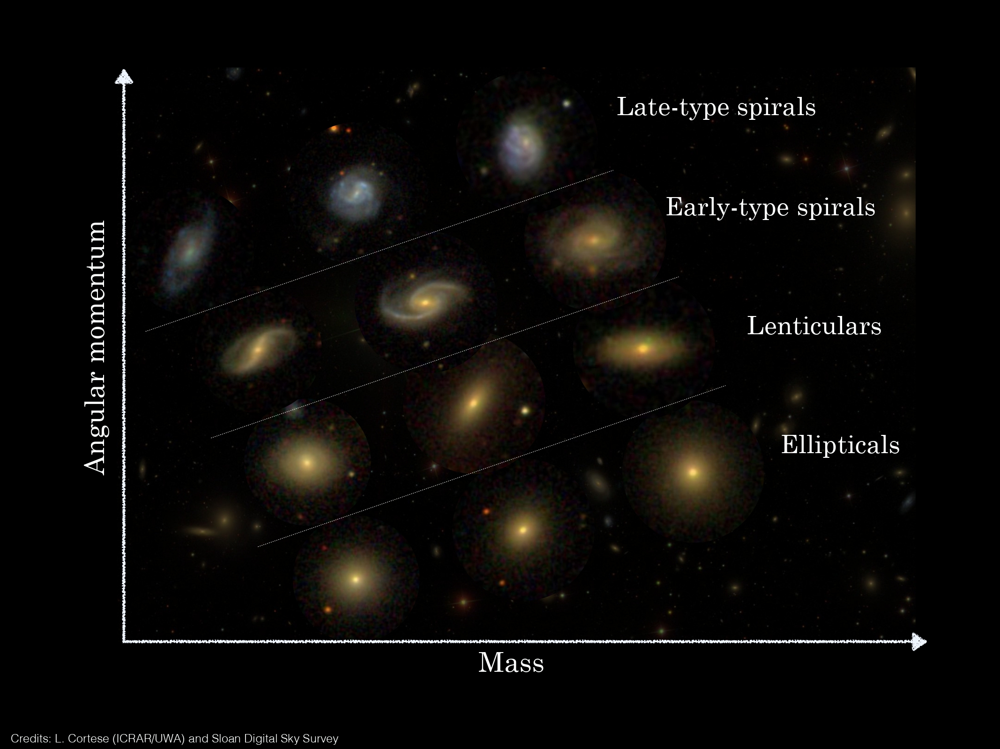

Hi, I am Pavel, welcome to my website! I am an astrophysicist interested in galaxy formation and evolution.
Currently, I hold a postdoctoral position at Leiden Observatory within the group of
Mariska Kriek, studying the dynamics of galaxies through cosmic time.
In this section you can find some general information about me, and if you want to know more about my research please follow
this link.
Education: – 2018-2022: PhD (cum laude) in Astrophysics at the University of Groningen.
Thesis: "Dark matter and angular momentum in nearby disc galaxies".
Advisors: Filippo Fraternali, Tom Ooosterloo, Betsey Adams.
– 2016-2018: MSc in Astronomy at the University of Groningen.
Thesis: "The evolution of ultra-diffuse galaxies in nearby galaxy clusters".
Advisor: Reynier Peletier
– 2016-2018: BSc in Physics at the Universidad Veracruzana.
Thesis: "The globular cluster NGC 6229 as seen from its variable stars.
Advisor: Armando Arellano Ferro
Research Interests: I have very broad interests in galaxy formation and evolution.
My expertise is on the kinematics and dynamics of galaxies (especially discs), but in general
I am very interested in the processes regulating the baryon cycle of galaxies and the connection
between the observed properties of galaxies and the theoretical expectations for their host dark matter haloes.
For more details visit my Research section.
Me: A few more personal things about myself in case you were curious...
I am from Mexico, and from the moment I was born and until I was six or so, I was one of the
~ 18000000 inhabitants of the marvelous, wonderful, and chaotic Mexico City. After than I grew up in
a beautiful city called
Xalapa,
where I did a BSc in Physics, although I returned to Mexico City to work on my BSc thesis at the Institute of Astronomy of
the National University of Mexico.
After that, I came to the Netherlands (lovely weather, amazing good, why not), to pursuit a MSc degree in Astronomy at the University of
Groningen. I liked Groningen so much (er gaat niets boven Groningen!) that I stayed four more years for my PhD, which I obtained with
cum laude distinction in the summer of 2022. As of September of 2022 I moved to Leiden to hold a
postdoctoral position at Leiden Observatory.
I love science but I enjoy many other things as well. What I love doing the most is reading (Paul Auster is my favorite writer,
The Tin Drum arguably my favorite book, but you know one cannot just say what is their favorite book without feeling remorse for the others),
and I also like a lot classical music (nothing like Tchaikovsky's violin concert), playing boardgames with friends (and ideally, but
not necesairly remaining friends), going to the cinema (even better if it's a Hugh Grant's movie), as well as playing squash and basketball
(go Spurs go!). Good food and nice wines (especially Italian wines, like a good Sangiovese) are also a must in my life.
Research
My field of research is galaxy evolution. I am fascinated by the complexity and yet universality of the laws of physics
that shape galaxies, and I am committed to the challenging task of understanding them. In particular, I am interested
in how are the fundamental parameters of galaxies connected to each other, what are the main physical mechanisms
regulating galaxy evolution, and how is the link between the baryonic component of galaxies and their host dark matter haloes.
My work is mostly observational (tho always trying to compare with simulations!), and I use some of the most advanced
facilities, namely optical and radio telescopes, often located in wonderful observatories. In the picture above you can see
one of my favorite observatories, El Caracol,
in the Mayan city of Chichén-Itzá. The observatory is not used anymore, but
I am very proud of coming from a country (Mexico) with such a rich astronomical heritage.
Below you can find some information on specific projects I have been working on recently. And in
these links you can find ADS libraries to my publications as
First-author
or as
Co-author.
Ultra-diffuse galaxies Ultra-diffuse galaxies (UDGs) have the stellar mass of dwarf galaxies but light distributions
similar to big spirals like the Milky Way, which makes them very diffuse. Their formation mechanisms (how do you form such an
extended light distribution with so little stellar mass) have been widely discussed in the literature over the last years but no concensus
has been reached. I have tackled the question from an observational perspective, looking both at the photometrical
properties of UDGs in nearby galaxy clusters, and especially at the gas dynamics of isolated UDGs.
One of the main findings of my research is that gas-rich UDGs (see left panel in the figure below) deviate from the baryonic
Tully-Fisher relation (see right panel), being this the first known galaxy population to do so. The position in the relation suggests that
the galaxies have baryon fractions approaching the cosmological limit. Our kinematic observations have also unvailed that gas-rich UDGs seem
to have dark matter haloes with inner densities much lower than expected in CDM.
Left: stellar (blue) and HI (green) emission in the gas-rich UDG AGC 114905 (Credits: J. Román and P. E. Mancera Piña,
see here.).
Right: UDGs in the baryonic Tully-Fisher relation, from Mancera Piña et al. 2022b.)
Angular momentum in disc galaxies From very early models of galaxy formation it became clear that
together with the mass, angular momentum is a fundamental parameter regulating galaxy evolution. For example, the existence of the
Fall relation (see image below) shows clearly the tight link between mass (M), specific angular momentum (j) and morphology.

Relation between stellar mass, stellar specific angular momentum (j*-M*,
the so-called Fall relation), and galaxy morphology. Credits: Luca Cortese.
Together with my collaborators, I have been studying the angular momentum in nearby disc galaxies, obtanining some of
the most detailed measurements of their stellar, gas, and baryonic specific angular momentum. As shown below, we have characterised
the j-M relations across a wide range of mass, with the largest high-quality sample available in the literature
(see Mancera Piña et al. 2021a). Moreover, we have
discovered one of the tightest known scaling relation for disc galaxies, connecting their baryonic mass, baryonic specific angular
momentum, and the gas fraction of galaxies (see Mancera Piña et al. 2021a).
This is quite remarkable given the large number of processes that can affect the angular
momentum reservoir of galaxies, such as feedback, different gas accretion histories, mergers, or dynamical friction, and yet it all results
in a very tight scaling relation. Our observations provide clear observational tests for models and simulations aiminng to reproduce
realistic galaxies.
Relations between specific angular momentum and mass for the stars, gas, and baryons in a sample of nearby disc galaxies.
From Mancera Piña et al. 2021a.
The scaleheights of gas discs While the gas discs of late-type galaxies are often assumed to be thin, observations in edge-on
galaxies show that the discs are actually thick, with a scaleheight that increases as a function of radius, i.e. the discs are flared.
This flaring is a direct consequence of the balance between gas pressure and gravity (see sketch below), and we can use the equations of vertical hydrostatic
equilibrium to estimate the flaring in any galaxy.
Sketch of the gas flaring resulting from the balance between gas pressure and gravity. The gas discs of galaxies flared with
radius, which has important implications for our understanding of ISM properties and, in the case of low-mass gas-rich systems,
their dynamics. Credits: Cecilia Bacchini.
During my research, I have designed a method to estimate the flaring of nearby disc galaxies (based on the equations of vetical
hydrostatic equilibrium) while simultenously deriving their mass model based on rotation curve decomposition. This has allowed me to
obtain some of the most detailed scale heights and mass models of massive and dwarf late-type galaxies, as shown in
Mancera Piña et al. 2022b. These mass
models are also an excellent tool to test different models of galaxy evolution, as they provide clear constraints on the parameters
of the dark matter haloes of our galaxy sample.
Downloads
Throwing some data at you... In this section you can find some interesting data associated with my published papers.
If I used some data you are interested in and that are not here please get in touch and I will be
happy to share them!
Angular momentum catalogues: In
Mancera Piña+21a and
Mancera Piña+21b we performed some of the most
detailed measurements of the stellar, gas, and baryonic specific angular momenta of nearby disc galaxies.
In this link you can find the
catalogue for the first paper, characterising the j-M (specific angular momentum-mass) relations. And in
this other link you can download the
catalogue for the second paper, in which we have discovered a tight scaling relation between j, M, and the gas fraction of the galaxies.
Gas scaleheights and mass models: Download here
the plots of the mass models (and posteriors distributions), and the tables with all the gas scaleheights for a sample of 32
nearby dwarf and massive disc galaxies, as presented in
Mancera Piña+22b. If you also want the
kinematics (rotation curves, gas velocity dispersion profiles) or the mass models (contribution to the circular speed from the
dark matter and different baryonic components) please get in touch and I will be happy to share them.
Some results from my research have been picked up my popular media as press releases.
Here you can find some of them.
An ultra-diffuse galaxy challenging the cold dark matter model? Articles from
Scientific American,
WIRED,
Popular Science,
MNRAS, and also
in Dutch by NOVA.
There are many more results from different media if you look for the galaxy AGC 114905, including press notes in
Spanish, Italian, French, Portuguese, Chineese, German, among many others.
Left: stellar (blue) and HI (green) emission in the gas-rich UDG AGC 114905 (Credits: J. Román and P. E. Mancera Piña,
see here.).
Right: UDGs in the baryonic Tully-Fisher relation, from Mancera Piña et al. 2022b.)
Six galaxies discovered to have little dark matter, read it in
English
or Dutch .
Contact
Email: pavel@strw.leidenuniv.nl
Address: Leiden Observatory
J.H. Oort Building
Niels Bohrweg 2
NL-2333 CA Leiden
The Netherlands
References: – Prof. Filippo Fraternali, University of Groningen, fraternali@astro.rug.nl
– Prof. James Binney, University of Oxford, james.binney@physics.ox.ac.uk
– Prof. Tom Oosterloo, ASTRON, the Nederlands Institute for Radio Astronomy, oosterloo@atron.nl
– Dr. Elizabeth A. K. Adams, ASTRON, the Nederlands Institute for Radio Astronomy, adams@atron.nl